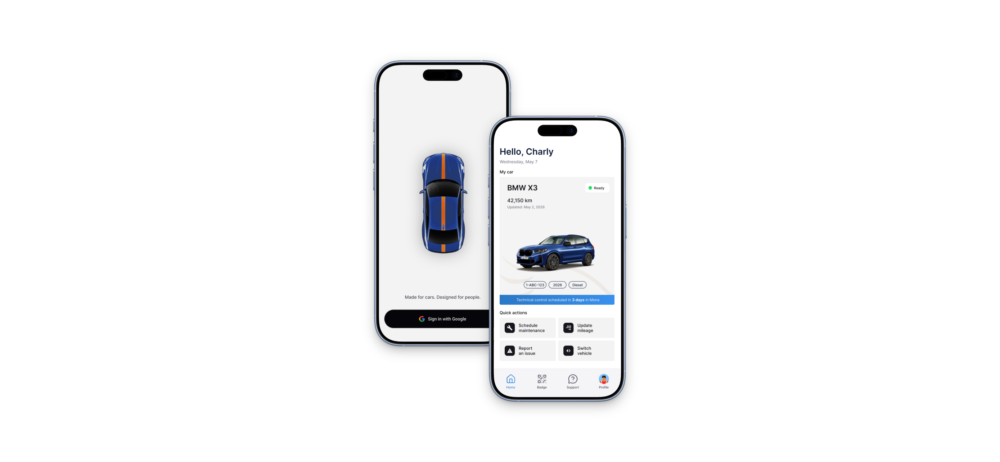
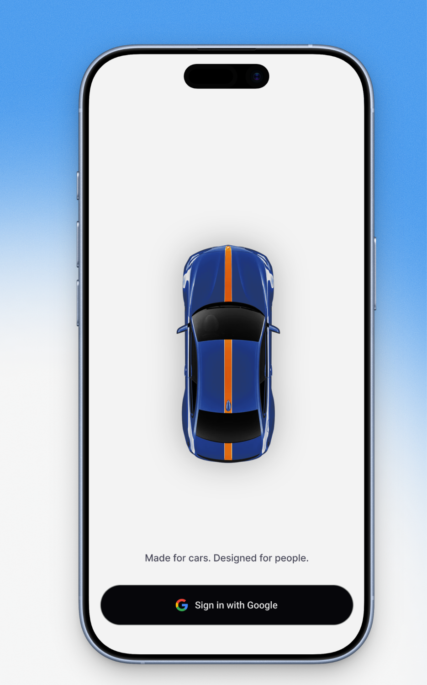
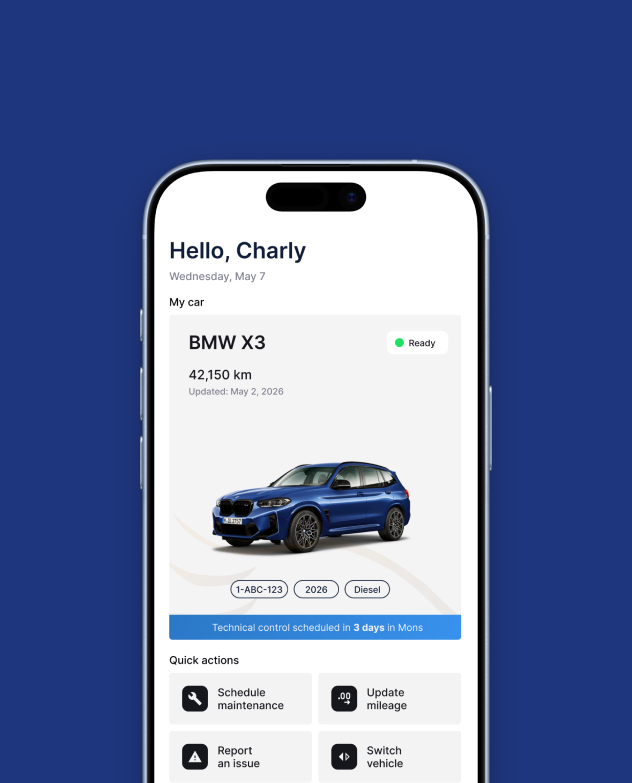
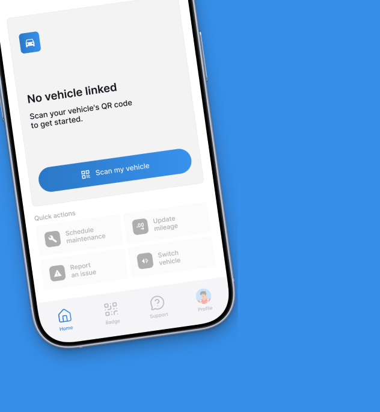
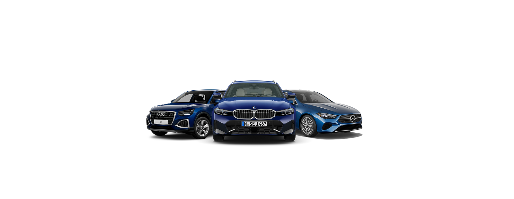

Anti-Panic Incident Reporting
A step-by-step guided workflow that reassures drivers during accidents, removing anxiety and capturing accurate insurance data immediately.
(2025)

I-car is an end-to-end fleet management platform designed for two distinct user groups. It pairs a centralized desktop Web App for Fleet Managers to govern, analyze, and optimize car inventory, with an empowering Mobile App for drivers to build safer road habits and manage incidents stress-free.
Traditional fleet software treats drivers as passive targets of supervision, leading to low engagement and high accident rates. In June 2025, internal metrics highlighted severe vulnerabilities in road safety:
Through user interviews, we discovered that stress during accidents led to inaccurate insurance reporting, while everyday vehicle handovers were burdened by manual paperwork.
“When I had an accident, I panicked. I couldn't figure out what data to collect or who to call first.” — Company Driver
“Swapping vehicles between employees takes days of admin back-and-forth. It needed to be instant.” — Fleet Operations Lead
A step-by-step guided workflow that reassures drivers during accidents, removing anxiety and capturing accurate insurance data immediately.
A secure peer-to-peer exchange feature using QR codes or PINs, updating fleet allocation in real time across systems.
An intelligent support chat answering technical questions instantly and building proactive maintenance habits.
An interactive banner for comparing technical specs and submitting top-3 vehicle preferences for company car attribution.



Creating micro-interactions for emergency situations taught us to minimize cognitive load, strip away unnecessary UI fluff, and prioritize clarity.
Ensuring real-time synchronization between the driver's mobile actions and the manager's desktop dashboard was critical for operational trust.
This internship was an incredible end-to-end journey. Being directly on-site with both the fleet manager and end-user drivers allowed us to conduct extensive UX research, leading to deep questioning of initial assumptions and endless iterations.
Stepping naturally into a Product Owner mindset alongside UI/UX design, I gained hands-on experience driving a complex mobility project from A to Z, balancing real user needs, technical constraints, and business goals.
